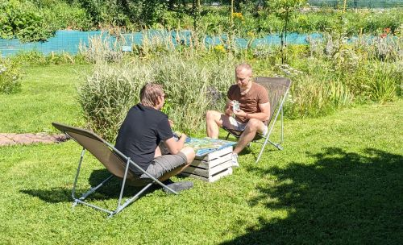
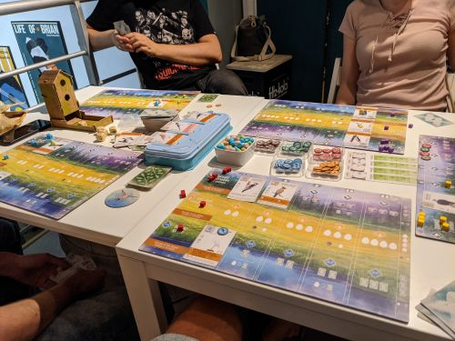
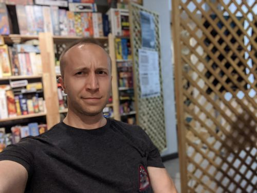

Z pierwszymi grami planszowymi zetknąłem się jeszcze za młodych lat, kiedy dane mi było nie raz przegrać w "Eurobiznes" czy "Magię i Miecz", jednak dopiero parę lat temu, wraz z rozwojem gier i zwiększeniem się ich dostępności na naszym rynku, zacząłem odkrywać jak rozbudowane jest już to hobby. Ponownie zaczynając swoją przygodę z grami planszowymi, zaczynałem od grania w takie tytuły jak "Agricola", "Descent: Wędrówki w Mroku", "Dracula" czy "Shogun". Po około roku nastąpiła moja kolejna, tym razem na szczęście krótsza, rozłąka z tym świetnym hobby.
Dzisiaj aktywnie poszukuję okazji do grania w gry planszowe - zarówno w nowe jak i ograne już przeze mnie tytuły, gram bardzo chętnie i z dużą przyjemnością. Na szczęście posiadam stałą ekipę do grania, jednocześnie społeczność planszówkowa jest na tyle otwarta, że nie ma problemu z okazyjną grą w innej grupie, z czego również chętnie korzystam. Jestem zwolennikiem raczej rozbudowanych i dłuższych gier planszowych (jak np. "Twilight Imperium IV" czy "Brass Birmingham"), chociaż jest także sporo tytułów nieco mniej skomplikowanych, które także przypadły mi do gustu. Podobnie z kwestią charakteru gier (Euro - bardziej policzalne, mniej losowe gry, czy Ameri - gry bardziej przygodowe, nastawiające się przede wszystkim na klimat i emocje), lubię obydwa ich rodzaje - o ile gra jest dobra i sprawia, że wszyscy gracze w nią się fajnie angażują. :)
Stąd też mój pomysł, na podzielenie się moją wiedzą i doświadczeniem związanym z grami planszowymi. Znając już ponad kilkadziesiąt tytułów, jestem w stanie zaproponować i wytłumaczyć odpowiedni tytuł w zależności od charakteru spotkania i grupy w nim uczestniczącej. Poza tym, stale wzbogacam swoją kolekcję o nowe, ekscytujące i rozbudowane pozycje oraz śledzę newsy i nowinki ze świata gier planszowych. W zależności od zapotrzebowania, jestem również w stanie zorganizować gry, których obecnie nie posiadam w kolekcji.
Zapraszam do współpracy! 